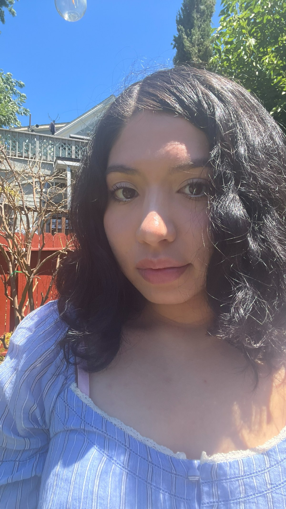

Esquinas rectas · 0px
Botón
rounded.none — tarjetas, botones estándar e inputs
recorrido por zonas · collage editorial
Un recorrido por paradas autocontenidas: cada zona tiene su color, su fotografía intervenida y su tipografía protagonista. Observar · intervenir · resolver.
Paleta reducida a cuatro colores de marca: rosa principal, azul oscuro para el énfasis, negro azulado como texto contraste y rosa claro como fondo. Cada zona elige un fondo sólido dominante y no repite la combinación en dos paradas consecutivas.
REVISAR: la paleta del documento se redujo a 4 colores (rosa principal #FFD8D9, azul oscuro #004952, negro azulado #1D273B y rosa claro #FFF7F8). link, button-secondary y text-tertiary se conservan por necesidad funcional, y los overlays son propuestos. link #0088CC contrasta ≈ 3.9:1 sobre el rosa claro (bajo AA para cuerpo).
Neue Haas Grotesk Display Pro para cuerpo y contenido; PerecScripte2 para títulos, botones y énfasis. La jerarquía se logra con tamaño, peso y color, nunca con opacidad.
Principal · Roman 400 · Medium 500 · Bold 700
Secundaria · títulos, botones y énfasis · 400
Unidad base de 8px para componentes. El espacio en blanco separa zonas con la misma fuerza que un cambio de color: cada parada es un respiro antes de la siguiente.
Rejilla: 12 columnas en escritorio (cada zona rompe columna cuando la foto lo pide), 8 en tableta, 1 en móvil en orden narrativo observar → intervenir → resolver.
Esquinas rectas (0px) en componentes funcionales. Dos excepciones: círculos perfectos para insignias y sellos, y recortes orgánicos solo para el tratamiento fotográfico.
rounded.none — tarjetas, botones estándar e inputs
rounded.full — insignias, íconos de navegación, sellos/badges

solo fotografía de intervención · nunca interfaz
Plano y de alto contraste, sin degradados ni sombras difusas. La profundidad es superposición de fotografía intervenida sobre bloques sólidos.
Duotono con la paleta de marca sobre bloque sólido; sombra mínima de anclaje solo en elementos flotantes.
sombra de anclaje · REVISAR: 0 4px 12px rgba(0,0,0,0.15)
Botones rectos, directorio de navegación, tarjetas de bloque sólido, tipografía-como-componente, insignias e intervención fotográfica.
Esquinas rectas (0px), fondo primary y texto en el blanco de marca; el hover invierte el contraste. Bold, sin sutileza.
Azul cielo con subrayado solo en hover, nunca en reposo.
Mapa de secciones con badges circulares y etiquetas cortas; funciona como ancla de orientación dentro del recorrido.
Bloque sólido con fotografía de intervención superpuesta y texto directo, sin fondo blanco de respiro. Alto contraste entre tarjetas contiguas.
Punto de partida del recorrido: el usuario se orienta antes de avanzar.
La foto duotona se superpone al bloque sin respiro adicional.
Títulos de zona condensados, bold y en mayúsculas a ancho completo: el elemento gráfico que ancla cada parada.
headline full-width de la zona, casi tocando los bordes del bloque.
Íconos circulares o dibujados a mano como acento puntual: un solo elemento por sección, nunca saturado.